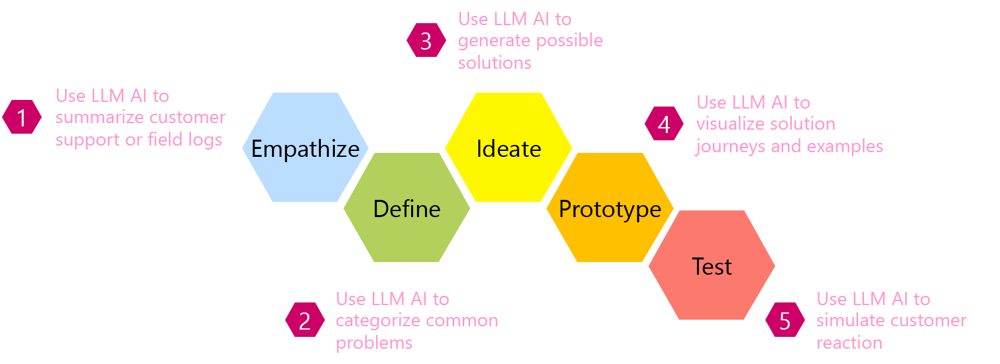

import json
import semantic_kernel as sk
from semantic_kernel.connectors.ai.open_ai import AzureChatCompletion, OpenAIChatCompletion
from IPython.display import display, MarkdownDesign Thinking

Setup
Python
Kernel
kernel = sk.Kernel()
api_key, org_id = sk.openai_settings_from_dot_env()
kernel.add_text_completion_service(
"openai", OpenAIChatCompletion("gpt-3.5-turbo-0301", api_key, org_id))
print("A kernel is now ready.")Plugins
pluginsDirectory = "../plugins-sk"
pluginDT = kernel.import_semantic_skill_from_directory(
pluginsDirectory, "DesignThinking")plugins-sk/
│
└─── DesignThinking/
|
└─── Define/
| └─── config.json
| └─── skprompt.txt
|
└─── Empathize/
└─── config.json
└─── skprompt.txt
Provide Input
Strength questions
strength_questions = ["What unique recipes or ingredients does the pizza shop use?", "What are the skills and experience of the staff?", "Does the pizza shop have a strong reputation in the local area?",
"Are there any unique features of the shop or its location that attract customers?", "Does the pizza shop have a strong reputation in the local area?", "Are there any unique features of the shop or its location that attract customers?"]Weakness questions
weakness_questions = ["What are the operational challenges of the pizza shop? (e.g., slow service, high staff turnover)", "Are there financial constraints that limit growth or improvements?",
"Are there any gaps in the product offering?", "Are there customer complaints or negative reviews that need to be addressed?"]Opportunities questions
opportunities_questions = ["Is there potential for new products or services (e.g., catering, delivery)?", "Are there under-served customer segments or market areas?",
"Can new technologies or systems enhance the business operations?", "Are there partnerships or local events that can be leveraged for marketing?"]Threats questions
threats_questions = ["Who are the major competitors and what are they offering?", "Are there potential negative impacts due to changes in the local area (e.g., construction, closure of nearby businesses)?",
"Are there economic or industry trends that could impact the business negatively (e.g., increased ingredient costs)?", "Is there any risk due to changes in regulations or legislation (e.g., health and safety, employment)?"]Strenghts
strengths = ["Unique garlic pizza recipe that wins top awards", "Owner trained in Sicily",
"Strong local reputation", "Prime location on university campus"]Weaknesses
weaknesses = ["High staff turnover", "Floods in the area damaged the seating areas that are in need of repair",
"Absence of popular calzones from menu", "Negative reviews from younger demographic for lack of hip ingredients"]Opportunities
opportunities = ["Untapped catering potential", "Growing local tech startup community",
"Unexplored online presence and order capabilities", "Upcoming annual food fair"]Threats
threats = ["Competition from cheaper pizza businesses nearby", "There's nearby street construction that will impact foot traffic",
"Rising cost of cheese will increase the cost of pizzas", "No immediate local regulatory changes but it's election season"]Customer comments
customer_comments = """
Customer 1: The seats look really raggedy.
Customer 2: The garlic pizza is the best on this earth.
Customer 3: I've noticed that there's a new server every time I visit, and they're clueless.
Customer 4: Why aren't there calzones?
Customer 5: I love the garlic pizza and can't get it anywhere else.
Customer 6: The garlic pizza is exceptional.
Customer 7: I prefer a calzone's portable nature as compared with pizza.
Customer 8: Why is the pizza so expensive?
Customer 9: There's no way to do online ordering.
Customer 10: Why is the seating so uncomfortable and dirty?
"""Workflow for Empathize
Run kernel with plugin
my_result = await kernel.run_async(pluginDT["Empathize"], input_str=customer_comments)Output
display(Markdown(
"## ✨ The categorized observations from the 'Empathize' phase of design thinking\n"))
print(json.dumps(json.loads(str(my_result)), indent=2))Workflow for Define
Run kernel with plugins
- Kernel works sequentially (first uses plugin
Empathize, thenDefine)
my_result = await kernel.run_async(pluginDT["Empathize"], pluginDT["Define"], input_str=customer_comments)Output
display(Markdown("## ✨ The categorized observations from the 'Empathize' + 'Define' phases of design thinking\n"+str(my_result)))Workflow for Ideation & Prototyping
Run kernel
my_result = await kernel.run_async(pluginDT["Empathize"], pluginDT["Define"], pluginDT["Ideate"], pluginDT["PrototypeWithPaper"], input_str=customer_comments)Output
display(Markdown("## ✨ The categorized observations from the 'Empathize' + 'Define' + 'Ideate' + 'Prototype' + phases of design thinking\n"+str(my_result)))Workflow for Evaluation
Prompt template
sk_prompt = """
A 40-year old man who has just finished his shift at work and comes into the bar. They are in a bad mood.
They are given an experience like:
{{$input}}
Summarize their possible reactions to this experience.
"""Test function
test_function = kernel.create_semantic_function(prompt_template=sk_prompt,
description="Simulates reaction to an experience.",
max_tokens=1000,
temperature=0.1,
top_p=0.5)Example prototype idea
sk_input = """
A simple loyalty card that includes details such as the rewards for each level of loyalty, how to earn points, and how to redeem rewards is given to every person visiting the bar.
"""Run kernel
test_result = await kernel.run_async(test_function, input_str=sk_input)Output
display(Markdown("### ✨ " + str(test_result)))